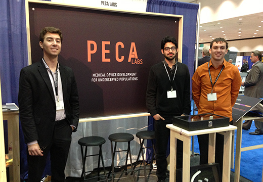
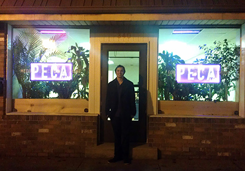

Saving lives with Doug Bernstein and his pediatric cardiology startup PecaLabs

Doug Bernstein (right) with PecaLabs team members Jamie Quinterno and Arush Kalra, MD
By Babs Carryer
Director of Training and Faculty Development, NCIIA
Blogger, NewVenturist
Entrepreneur, LaunchCyte
Former adjunct professor of entrepreneurship, Carnegie Mellon University
Young Doug Bernstein shouldn’t be alive. And he wouldn’t be but for exceptional medical care when he was born. Doug was born with a congenital defect that gave him a 2 percent chance for survival. Resolving congenital conditions like his has remained ever-present for Doug, who is now a 22-year old Carnegie Mellon biomedical (and mechanical) engineering graduate laboring to solve clinical problems with his startup Peca Labs (for pediatric cardiology).
Like another young entrepreneur I featured in a previous article (“Teaching Entrepreneurship in Engineering”), Doug is part of a new breed of young entrepreneurs in healthcare. They are solving some thorny problems with novel solutions because they don’t know that they shouldn’t, that the path to success is fraught with peril, that solutions have been tried – and failed. These young entrepreneurs are not the products of cynical experience, and they have a long path ahead to success. But they also have the energy and the runway to get there – with the right support and help.
These young folks are part of a breed of innovators that we, as a nation, must support and encourage. They are the product of engineering and other technical programs at our great research universities, and they are choosing the road less traveled. It is up to us to guide them along that path, to help them improve healthcare options, and to use innovation and entrepreneurship to make our nation more competitive – for the betterment of the human condition.
Why entrepreneurship?
Many newly minted engineers like Doug are choosing the entrepreneurial path over advanced degrees and other opportunities because a startup is the only way they can get their ideas to patients. Doug didn’t plan on becoming an entrepreneur. But he has always walked the unbeaten path. By second grade, Doug was determined to be a genetic engineer – yes, you read right: second grade! Competitive with his older brother, precocious Doug learned to read, write and study at an early age – three to be exact. By age eight, Doug was devouring books on science and genetics. He developed some funny theories, he tells me: “about trees and how long they lived, and I wanted people to be like trees.”
Doug ended up in biomedical engineering at CMU because of his high-school interest in micro-robotics. He is enthralled by the concept of small robots that can improve human health, like the pill camera that visualizes your GI track.
“I thought that swallowing a pill instead of a colonoscopy sounded like a good plan,” Doug relates. “Looking at robots now you can see the possibilities of nano-robotics and where that can take you.”
CMU has several spinouts in that area and Doug worked on a few related lab projects. He had several research projects going at any one time, starting from his freshman year. Doug was hunting for a project that he could sink his teeth into, something that spoke to him, to his heart – literally. One of his research projects involved inventing and testing new heart valves with Kerem Pekkan, Ph.D., and a surgeon from the University of Pittsburgh Medical Center (UPMC), Dr. Masahiro Yoshida (Masa).
Masa had been utilizing several new designs and materials for pediatric right ventricular outflow tract (RVOT) reconstruction and had been searching for a valve that provided some flexibility and better resistance to calcification so that, as the baby grew, the valve would continue to be valid. Otherwise, the state-of-the-art valve becomes hardened and narrow over time. This means multiple surgeries and valve replacements as a baby grows through youth and into adulthood. These procedures are costly, dangerous, invasive and highly inefficient, even while they were clinically effective. Having developed components for a new valve, Masa used them in 50 surgeries to date – all with excellent clinical results.

Invention to InnovationWith his engineering mindset and the lead taken by his CMU engineering professor, Doug and the team came up with a novel design for a synthetic valved conduit – the Masa Valve – that improved on the components started by Masa. At the same time, Doug, by then a junior, took a class in robotics ventures that focused on real world applications of robotics.
“That got me thinking about the concept of taking things into the market,” he said. “And I started to get serious about finding something that enabled me to do that—something that I could commit to and believe in, and where I could leverage CMU’s entrepreneurial ecosystem to help me figure out what I didn’t know, and what I needed to know. That’s when I met Babs.”
Commercialization
Doug came to my office in May 2011, right after finals at CMU. It seemed like he had been up for days—he looked exhausted. But he wanted advice badly and he was willing to spend a summer investigating the market side of his heart valve idea. In my role as embedded entrepreneur for Project Olympus, one of CMU’s initiatives around entrepreneurship, I was able to work with Doug to mentor him through the process of investigating the business opportunity for his valve. I spotted the heart and drive of an entrepreneur in Doug. While his stubbornness infuriated me, I respected his commitment to learn and dedication to the project. “He is coachable,” I concluded.
Doug had no clue about the FDA, reimbursement, startups, markets, business or funding. He had no money, no way to eat or pay rent. I worked with our administration to get him GAP funds to pay himself to work on the project for the summer. I wanted him fully committed with no second job that paid his rent.
By the end of the summer, he had the beginnings of a market understanding. He had talked with some of the 100 cardiothoracic surgeons nationwide who each perform 32 surgeries per year. He talked to hospital systems, insurance companies and the FDA. He didn’t have a plan, but he had the beginnings of a strategy of how to develop the business and the technology during his senior year. He started that fall by taking a class that I co-taught with Dave Mawhinney (head of the Don Jones Center for Entrepreneurship) in basic entrepreneurship for engineers (Introduction to Technology Entrepreneurship for Engineers).
Doug had decided over the summer that he wanted to give an entrepreneurial go of it. He had co-authored a paper on the heart valve concept (as lead author – impressive for an undergrad). He had also put out a poster for the Society of Thoracic Surgeons. Confident in his technical abilities, the entrepreneurship class was a means for Doug to learn what he needed to do to hone in on the business aspects of starting and growing a business. Doug used his final semester at CMU to take an independent study with me – that semester was all about Peca and getting it off the ground.
Today
After graduating in Mary 2012, Doug deferred a Ph.D. (at a leading university which gave him a three-year deferral) to start the company. He recruited fellow CMU alums, Jamie Quinterno (history and business; also my student), and Arush Kalra, MD (current masters student in biomedical engineering and former pediatric urological surgeon) to join the startup and they began operations. To date, Peca has raised about $250,000, and Doug is continuing the fundraising.
Challenges
Peca has a long road to hoe, between attempting FDA approval, finding manufacturers, and other milestones. However, Doug is determined to help the 3,200 children per year who require RVOT reconstruction, each of whom will need three to four open-heart surgeries over the course of their growth. Peca has already received Humanitarian Use Device status (HUD) from the FDA. The company still has to prove safety and benefits to achieve a Humanitarian Device Exemption (HDE) so that they can sell the devices. Peca faces all kinds of manufacturing, IP, and licensing challenges. Fortunately, reimbursement looks like it won’t be the massive hurdle that it often is. The company has come far since Doug entered my office almost two years ago. Doug has come far personally. His journey is not over, but his eyes are wide open to the possibilities. If Peca achieves its goal of bringing this valve to market, the company will establish a new precedent for bringing orphan devices to market. As a niche player with streamlined processes, Peca should be an attractive acquisition target.
Entrepreneurship Education in Engineering
Entrepreneurship has given Doug the opportunity to expand his horizons in a way that can impact thousands of young children who need heart surgery. It has literally changed his life. And we should realize that there are thousands, maybe even tens of thousands, of Dougs on campuses across the nation. Instilling the entrepreneurial spirit in students like Doug, giving them the tools they need to take products to market, encouraging and unleashing innovation and entrepreneurship benefits not only those students, but the universities, the nation and humankind. It is up to universities to recognize the importance of integrating entrepreneurship training deeply into the fabric of their course and program offerings.
Doug believes that engineering programs are often backwards:
“They teach you engineering but you never think about applications in the real world. You learn to focus on making the technology work, but you never learn to focus on why make it work. You can go through four or five years of work, and what you create may never help anyone. The questions are never asked. You get to choose what you are doing – but are never asked ‘is this useful?’ Adding that simple question into engineering curriculum would open the doors. It would bring in the actual world, not theoretical world.”
Let’s give the Dougs the real-world experience that they crave, not as an adjunct to, but as a core part of their engineering experiences!